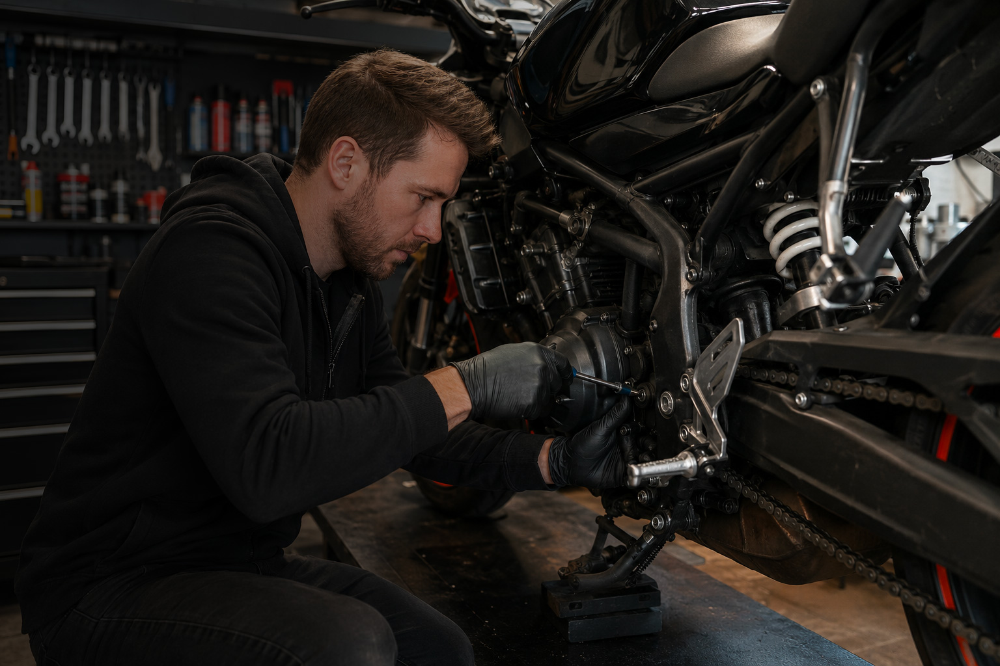
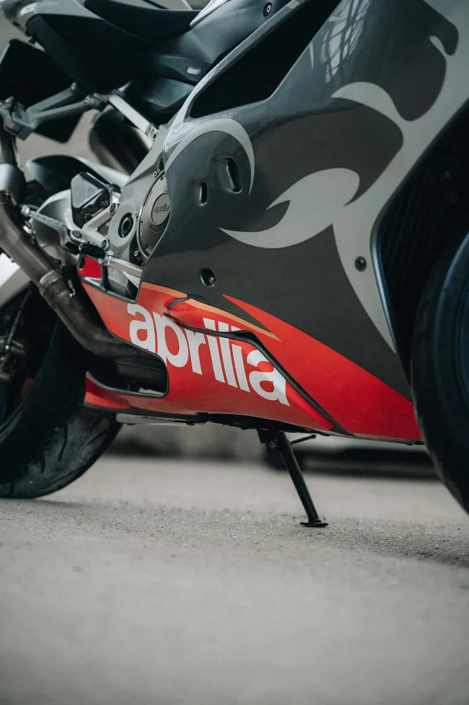

Goed sleutelen is pas echt iets waard als je het ook goed vastlegt
Een oliebeurt, kettingset of kleppencontrole die nergens terug te vinden is, telt in de praktijk minder zwaar dan hetzelfde onderhoud met foto’s, kilometerstand, onderdelenlijst en bewijs erbij.
Juist nu steeds meer motorrijders zelf sleutelen, wordt documentatie belangrijker dan de klassieke stempel op zichzelf. Niet omdat een dealerstempel niets meer waard is, maar omdat kopers en eigenaren vooral willen kunnen terugzien wat er echt is gebeurd.

Zelf sleutelen is normaal geworden. Slordig documenteren helaas ook.
Voor veel motorrijders is zelf onderhoud doen allang geen uitzondering meer. Een olie + filterwissel bij een Aprilia RSV Mille, remblokken vervangen voor het trackdayseizoen, een nieuwe kettingset monteren of even de remvloeistof verversen: het zijn klussen die thuis of in een gedeelde garage prima te doen zijn als je weet waar je mee bezig bent.
Alleen ontstaat daarna vaak hetzelfde patroon. De bon van de Motul-olie zit nog in een mail, de foto van de kilometerstand staat ergens tussen vakantiekiekjes, het onderdeelnummer van de oliefilter staat in een webshopaccount en de datum heb je half onthouden. Dan heb je technisch gezien onderhoud gedaan, maar je motor onderhoud bijhouden schiet alsnog tekort.
Precies daar zit de kern van dit onderwerp: zelf sleutelen is waardevol, maar losse administratie trekt die waarde langzaam weer uit elkaar.
Waarom dealerstempels steeds minder het hele verhaal vertellen
Een stempel in een boekje voelt nog steeds vertrouwd. Zeker bij nieuwere motoren of bij merken waar dealeronderhoud traditioneel zwaar weegt. Alleen zegt zo’n stempel lang niet altijd genoeg over wat er precies is gedaan. Je ziet meestal geen foto’s, geen gebruikte onderdelen, geen slijtagebeeld en geen context rond extra werk dat tijdens het sleutelen is opgevallen.
Bij oudere motoren, importmotoren, circuitmotoren en liefhebbersprojecten is dat nog duidelijker. Daar is de waarde van een nette onderhoudshistorie van je motor vaak groter dan de vraag of elk moment via een officiële dealer liep. Een koper wil weten of de motor consequent en zorgvuldig is bijgehouden. Als jij dat kunt laten zien met duidelijke registraties, kan goed DIY-onderhoud juist vertrouwen geven.
Dealerstempels verdwijnen dus niet uit beeld, maar ze zijn minder vanzelfsprekend het enige bewijsstuk dat telt. Zeker niet in een wereld waarin veel serieuze liefhebbers hun onderhoud zelf doen en daarbij prima werk afleveren.

Wat je minimaal wilt registreren als je zelf aan je motor sleutelt
Datum van het onderhoud
Kilometerstand op dat moment
Exacte werkzaamheden
Onderdelen en vloeistoffen
Kosten en bonnetjes
Foto’s voor, tijdens en na
Opmerkingen voor later
Upgrades en modificaties
Wat kopers van een tweedehands motor echt willen zien
Een koper zoekt zelden naar de mooiste spreadsheet of het dikste mapje. Wat iemand echt wil, is rust in het verhaal. Wanneer is de olie vervangen? Hoe recent is de kettingset? Zijn de kleppen ooit gecontroleerd? Is de remvloeistof op tijd gedaan? Welke banden zitten erop en wanneer zijn die gemonteerd?
Als je die vragen direct kunt beantwoorden met een duidelijke onderhoudslijn, win je vertrouwen. Denk aan een registratie zoals: olie + filter vervangen bij 41.220 km op een Aprilia RSV Mille, Motul 7100 15W-50 gebruikt, Hiflofiltro-filter gemonteerd, foto van kilometerstand toegevoegd en bon opgeslagen. Dat leest heel anders dan “olie is laatst nog gedaan”.
Juist daarom vertegenwoordigt onderhoudsgeschiedenis waarde. Niet alleen in euro’s, maar ook in geloofwaardigheid. Wie een motor verkoopt met een complete historie hoeft minder te overtuigen en minder uit het hoofd te reconstrueren.
Voorbeeld van een bruikbare onderhoudsregistratie
| Datum | Km-stand | Werk | Onderdelen / vloeistoffen | Bewijs |
|---|---|---|---|---|
| 08-03-2026 | 41.220 km | Olie + filter vervangen bij Aprilia RSV Mille | Motul 7100 15W-50, Hiflofiltro HF564 | Bon + foto kilometerstand |
| 21-04-2026 | 42.005 km | Remblokken voor vervangen voor trackday seizoen | SBS Street Excel sinter | Foto oude en nieuwe blokken |
| 02-05-2026 | 42.460 km | Kettingset gemonteerd en uitgelijnd | DID ketting, JT tandwielen | Factuur onderdelen + montagefoto |
| 16-05-2026 | 42.910 km | Remvloeistof ververst | Motul RBF 600 | Bon + foto reservoir |
Het echte probleem is zelden gebrek aan onderhoud. Het is versnippering.
Veel motorrijders hebben de informatie eigenlijk wel. Alleen staat die verspreid over losse bonnetjes, foto’s, aantekeningen, WhatsApp-gesprekken met een maat die meehielp, een notitie-app en misschien nog een half ingevuld Excel-bestand. Dan wordt motor onderhoud in Excel geen oplossing maar een extra plek erbij.
Dat versnipperde karakter is precies waarom onderhoud vergeten wordt. Niet omdat je het niet belangrijk vindt, maar omdat het terugzoeken te veel losse eindjes heeft. Als je eerst je galerij, daarna je mail en daarna je schuurla open moet trekken om één onderhoudsmoment compleet te krijgen, stel je registreren makkelijk uit tot later.
Een praktisch motor onderhoud schema helpt je vooruitkijken, maar zonder logboek blijft het lastig terugzien wat echt al gebeurd is. Daarom werkt een centrale tijdlijn beter dan losse tools die elk maar een stukje van het verhaal vasthouden.

Waarom foto’s voor, tijdens en na onderhoud zo sterk zijn
Foto’s maken onderhoud concreet. Een foto van de kilometerstand voordat je begint, een beeld van versleten remblokken op de werkbank en een foto van het eindresultaat na montage zeggen samen meer dan een losse notitie ooit kan doen.
Dat geldt zeker bij grotere klussen of upgrades. Denk aan een nieuwe uitlaat, aangepaste clip-ons, andere vering, revisie van voorvorkpoten of het vervangen van een complete kettingset. Zulke dingen wil je later niet alleen noemen, maar ook kunnen laten zien. Foto’s geven context, maken je logboek levendiger en helpen je zelf ook herinneren hoe iets er toen bij stond.
Bij een subtiele motor onderhoud app hoort daarom eigenlijk altijd ruimte voor beeld, documenten en notities per onderhoudsmoment. Anders blijft het weer bij alleen een lijstje.


Kilometerregistratie is geen detail maar de ruggengraat van je onderhoudslog
Zonder kilometerstand verliest onderhoud snel zijn timing. Dan weet je misschien nog dat de olie ergens in het voorjaar is gedaan, maar niet of dat 1.000 of 6.000 kilometer geleden was. Bij olie, banden, ketting, remblokken en kleppencontrole maakt dat een groot verschil.
Kilometerregistratie is ook belangrijk voor kopers. Zij willen niet alleen zien dat iets gebeurd is, maar ook hoe dat zich verhoudt tot het huidige gebruik van de motor. Een foto van de teller bij onderhoudsmomenten kost weinig moeite en maakt je onderhoudsboekje voor je motor direct sterker.
Welke onderhoudsmomenten en wijzigingen je echt niet wilt vergeten
Leg niet alleen de grote beurt vast. Juist de terugkerende en kostbare momenten maken later het verschil in overzicht. Denk aan oliebeurten, filters, een kettingset, kleppencontrole, remvloeistof, koelvloeistof, bandenwissels, accuvervanging, bougies en wiellagers. Maar vergeet ook upgrades of modificaties niet.
Een set Michelin Power GP’s voor een nieuw seizoen, aangepaste clip-ons, andere remleidingen, een andere demper of een gewijzigde tandwielverhouding zijn precies de dingen waar liefhebbers later vragen over stellen. Als je die alleen onthoudt, ben je ze uiteindelijk half kwijt. Als je ze registreert, worden ze onderdeel van een complete onderhoudshistorie en gebruikslijn.
Een tijdlijn of logboek geeft vooral rust
Het grootste voordeel van goed documenteren is niet eens verkoop. Het is rust in eigendom. Je hoeft niet meer te gokken wanneer de remvloeistof is gedaan, welke olie er de vorige keer in ging of welke kettingset erop kwam. Je ziet het terug, met bewijs en context erbij.
Daar zit ook de logische rol van GarageBook. Niet als harde verkooppitch, maar als digitale onderhoudstijdlijn waarin onderhoud, kilometerstanden, documenten, foto’s en opmerkingen bij elkaar blijven. Voor motorrijders die nu verspreid werken met notities, mail en losse foto’s is dat vaak precies de stap van chaos naar overzicht.
Goede documentatie levert uiteindelijk tijd, geld en vertrouwen op
Je bespaart tijd omdat je minder hoeft te zoeken, geld omdat onderhoudsmomenten minder snel tussen wal en schip vallen en vertrouwen omdat je later kunt laten zien wat er echt is gedaan.
Wie zelf sleutelt en tegelijk netjes documenteert, bouwt aan iets dat langer meegaat dan de beurt zelf: een onderhoudshistorie die bruikbaar blijft voor jezelf, overtuigend werkt richting een koper en prettig leest als digitale onderhoudstijdlijn.

Meer lezen over motorhistorie en onderhoud bijhouden
Verdiep je ook in structureel onderhoud bijhouden voor je motor, het nut van een digitaal onderhoudsboekje voor motoren, de verschillen met een Excel-overzicht voor onderhoud, een praktisch onderhoudsschema voor je motor en waarom een app voor motoronderhoud steeds vaker de centrale plek wordt, de aandachtspunten bij circuit onderhoud en trackday onderhoud en de blog motor APK in Europa en zelf onderhoud bijhouden.
Veelgestelde vragen over zelf motoronderhoud documenteren
Is zelf uitgevoerd onderhoud minder waard dan onderhoud met dealerstempel?
Nee, niet automatisch. Een dealerstempel geeft vertrouwen, maar goed gedocumenteerd zelf uitgevoerd onderhoud met datum, kilometerstand, onderdelen, foto’s en bonnetjes kan minstens zo sterk overkomen.
Wat willen kopers van een tweedehands motor echt zien?
Vooral duidelijkheid. Wat is er gedaan, wanneer, bij welke kilometerstand, met welke onderdelen en welk bewijs daarbij hoort. Een compleet logboek leest rustiger dan losse claims uit het hoofd.
Welke onderhoudsmomenten moet ik altijd registreren?
Leg in elk geval oliebeurten, filters, kettingsets, kleppencontrole, remvloeistof, banden, accu, bougies en relevante upgrades of modificaties vast.
Waarom is kilometerregistratie zo belangrijk bij motoronderhoud?
Omdat kilometerstand het onderhoud in context zet. Zonder tellerstand is later moeilijk te beoordelen hoe lang olie, banden of remmen werkelijk geleden zijn gedaan.
Is een digitaal logboek handiger dan losse bonnetjes en foto’s?
Ja. Een digitaal logboek brengt werkzaamheden, kosten, documenten, kilometerstanden en foto’s samen in één onderhoudstijdlijn per motor.